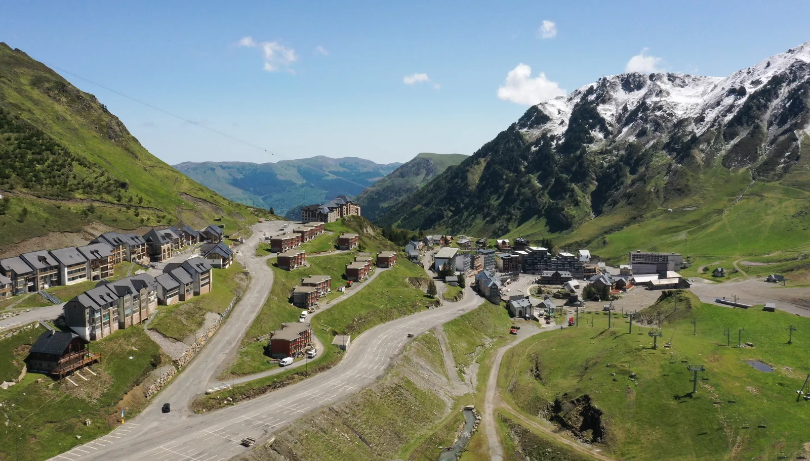

Une station pied de pistes
Le voyageur cherche une lecture simple : où est le bien, comment accéder aux pistes, où se garer, que voit-on depuis le logement et combien de temps faut-il pour être opérationnel.
À La Mongie, un bien n’est pas seulement comparé sur son prix ou son nombre de couchages. Il est lu à travers sa vue, son accès aux pistes, sa proximité avec le Pic du Midi, son stationnement, son confort réel et la capacité du propriétaire à rassurer avant la réservation. LocPilot aide à transformer cette lecture locale en dispositif digital plus clair, plus visible et moins dépendant d’un seul canal.
Sur une destination comme La Mongie, la visibilité locale doit raconter beaucoup plus qu’un appartement disponible. Elle doit faire comprendre l’usage du bien : pied des pistes, vue montagne, accès front de neige, séjour famille, court séjour, ski, vélo, randonnée, Pic du Midi, vallée de Campan ou base de départ vers le Col du Tourmalet.
Le voyageur cherche une lecture simple : où est le bien, comment accéder aux pistes, où se garer, que voit-on depuis le logement et combien de temps faut-il pour être opérationnel.
Beaucoup de biens se ressemblent sur les plateformes. La différence se joue dans la qualité des visuels, l’ordre des informations et la précision du positionnement.
La Mongie reste très hiver, mais le Tourmalet, le Pic du Midi, le vélo, la randonnée et la recherche de fraîcheur donnent aussi un vrai angle été.

Les données ne servent pas à promettre un résultat automatique. Elles servent à comprendre le terrain : La Mongie bénéficie d’une destination forte, mais cette force attire aussi une concurrence importante.
N’PY présente le Grand Tourmalet, Barèges-La Mongie, comme le plus grand domaine skiable des Pyrénées françaises, avec plus de 100 km de pistes.
Source : N’PY Grand Tourmalet
Le domaine est présenté avec environ 300 hectares de pistes, 54 pistes à parcourir, 1 100 m de dénivelé et 27 remontées mécaniques.
Source : N’PY Grand Tourmalet
Le dossier de presse N’PY 2025-2026 indique 507 961 journées skieurs et 19,17 M€ de chiffre d’affaires pour le Grand Tourmalet sur la saison 2024-2025.
Source : Dossier de presse N’PY 2025-2026
En été 2025, les domaines N’PY ont totalisé 239 042 passages aux remontées mécaniques, soit +4 % par rapport à l’été 2024 et +8 % par rapport à la moyenne des trois saisons estivales précédentes.
Source : La Semaine des Pyrénées
L’INSEE indique que l’Occitanie atteint 47,2 millions de nuitées estivales en 2025, en hausse de 2,2 %, et que la fréquentation touristique progresse de 4,2 % dans les Pyrénées.
Source : INSEE Occitanie · été 2025
L’INSEE signale aussi que l’offre locative sur plateformes reste dynamique dans les Pyrénées, avec +9 % de nuits disponibles et +10 % de nuits réservées sur la saison observée.
Source : INSEE · données locatives été 2025
Lecture LocPilot : ces chiffres confirment un territoire attractif, mais aussi un marché où la simple présence sur une plateforme ne suffit plus. À La Mongie, le bien doit être compris vite, comparé favorablement et relié à une expérience locale claire.
Sur un appartement situé à La Mongie, la comparaison janvier-mars 2025 et janvier-mars 2026 montre une progression du chiffre d’affaires de 3 375 € à 4 497,70 €, soit environ +33,3 %, avec 43 nuits réservées contre 61 nuits. Ce cas reste un exemple terrain, non une promesse de résultat, mais il illustre l’intérêt d’un meilleur pilotage de la présentation, de la distribution et de la lecture de saison.
À La Mongie, un bien ne se présente pas de la même façon selon son emplacement. Un logement au pied des pistes, proche du centre station, orienté Sud ou pensé pour les séjours vélo ne raconte pas la même expérience au voyageur.
Le point fort est l’accès immédiat. Il faut montrer les distances, la facilité d’arrivée, le stationnement, la vue et le confort après-ski.
La proximité du Pic du Midi renforce l’imaginaire : panorama, freeride, observation, expérience montagne et séjour mémorable.
L’été ne doit pas être traité comme une saison secondaire : vélo, randonnée, fraîcheur, cols mythiques et événements changent l’angle de vente.
La Mongie s’inscrit dans un bassin plus large : Bagnères-de-Bigorre, vallée de Campan, Payolle et Barèges renforcent la lecture Grand Tourmalet, entre thermalisme, ski, nature et accès montagne.
Au-delà du ski, un logement doit rassurer sur les accès, le stationnement, les couchages, les équipements, les rangements et la simplicité d’arrivée.
La Mongie peut aussi se lire hors hiver : Tourmalet, randonnée, vélo, Pic du Midi, courts séjours et séjours montagne doivent être rendus visibles.
Beaucoup de biens apparaissent sur les plateformes. Mais entre apparaître, être compris, donner envie et capter une demande plus directe, il y a un écart stratégique.
Un studio, un T2 cabine, un appartement familial ou un bien premium ne doivent pas être présentés avec le même angle.
Photos, drone, immersion 360, vue, orientation, confort et parcours intérieur doivent rassurer avant même la lecture complète de l’annonce.
Le direct ne remplace pas forcément les OTA. Il complète le dispositif et permet de limiter la dépendance à une seule source de réservations.
Un bien à La Mongie doit pouvoir parler ski, mais aussi Tourmalet, vélo, randonnée, Pic du Midi, courts séjours et tourisme de fraîcheur.
Le taux de remplissage ne suffit pas. Il faut regarder les nuits, le prix moyen, les frais, la commission OTA, les périodes creuses et les arbitrages de saison.
LocPilot structure, conseille, configure et valorise. Le propriétaire garde ses décisions, ses comptes, ses contrats, ses prix et ses encaissements.
L’objectif n’est pas de devenir un intermédiaire de plus. L’objectif est d’aider le propriétaire à reprendre le contrôle de sa visibilité, de sa présentation, de ses outils et de son parcours de réservation.
Travailler les signaux locaux : La Mongie, Grand Tourmalet, Pic du Midi, Bagnères-de-Bigorre, Campan, Payolle et Tourmalet.
Créer une lecture visuelle premium : montrer le bien, l’environnement, la vue, l’accès et l’expérience réelle avant réservation.
Structurer calendriers, redirections, moteur de réservation ou synchronisation selon l’écosystème choisi par le propriétaire.
Comparer les périodes, les nuits, le revenu, les frais, la dépendance OTA et les leviers de progression sans promettre de résultat automatique.
Une présence dédiée peut clarifier le logement, montrer l’environnement, rassurer le voyageur et créer un parcours de réservation plus lisible.
LocPilot accompagne la visibilité, les outils et la structuration. Les prix, contrats, annonces, encaissements et obligations restent côté propriétaire.
L’objectif est simple : permettre à un propriétaire de passer du constat local aux actions concrètes à mettre en place pour améliorer la visibilité de son bien, structurer ses réservations et réduire sa dépendance aux plateformes.
Replacer La Mongie dans la stratégie globale des destinations ski, montagne, quatre saisons et Grand Tourmalet du département.
Lire la page 65Relier La Mongie à sa ville thermale de référence, aux services, au bien-être, au Pic du Midi et à l’accès vallée.
Voir BagnèresConnecter La Mongie à la vallée de Campan, au lac de Payolle, aux séjours nature, vélo, famille et quatre saisons.
Voir Campan-PayolleRelier La Mongie à l’autre versant du Grand Tourmalet, au ski, au thermalisme et aux séjours montagne côté vallée de Barèges.
Voir BarègesVoir comment un bien peut être mieux compris par Google, les voyageurs et les moteurs IA.
Lire le guide SEO/GEOStructurer un canal complémentaire aux OTA, sans confusion ni promesse excessive.
Lire le guide directSynchroniser calendriers, canaux, prix et messages sans perdre en clarté opérationnelle.
Lire le guide outilsComprendre le périmètre d’intervention LocPilot et les responsabilités qui restent côté propriétaire.
Lire la FAQExplorer les autres zones couvertes par LocPilot dans les Hautes-Pyrénées et les destinations à fort potentiel locatif.
Voir les localitésOui. La Mongie fait partie des localités prioritaires de LocPilot dans les Hautes-Pyrénées. L’accompagnement porte sur la visibilité locale, le canal direct, les outils, la valorisation du bien et la lecture de rentabilité.
Non. La Mongie reste très associée au ski et au pied des pistes, mais le territoire Grand Tourmalet, Pic du Midi, Col du Tourmalet, Bagnères-de-Bigorre, Payolle et vallée de Campan permet aussi de travailler l’été, le vélo, la randonnée, le tourisme de fraîcheur et les courts séjours montagne.
Oui. À La Mongie, la promesse est souvent plus station, altitude, pied des pistes, vue, accès remontées et expérience montagne immédiate. À Bagnères-de-Bigorre, l’angle peut davantage reposer sur le thermalisme, la ville de base, la vallée de Campan, Payolle et l’accès au Tourmalet.
Les éléments prioritaires sont la vue, la proximité réelle des pistes ou des remontées, l’accès, le stationnement, les couchages, le confort intérieur, l’orientation, le balcon ou la terrasse, la qualité visuelle, l’immersion 360 et la cohérence entre annonce, site et canal direct.
Oui, s’il reste complémentaire aux plateformes et s’il inspire confiance. Une page locale claire, des visuels forts, une redirection ou un moteur de réservation maîtrisé, des calendriers synchronisés et des informations pratiques peuvent réduire la dépendance à un seul canal.
Seulement si le bien ou l’établissement respecte les conditions d’éligibilité applicables. Google reste décisionnaire de la validation, de l’affichage et de la visibilité. LocPilot peut accompagner la structuration, mais ne garantit pas la validation ni le référencement d’une fiche.
Non. LocPilot structure les signaux, le canal direct, les outils et la lecture de performance, mais ne garantit ni position SEO, ni volume de réservations, ni validation par Google ou par des plateformes tierces.
Faisons un premier point sur votre bien, sa zone exacte, ses visuels, ses canaux, son niveau de dépendance aux OTA et les leviers à prioriser pour renforcer sa visibilité locale.